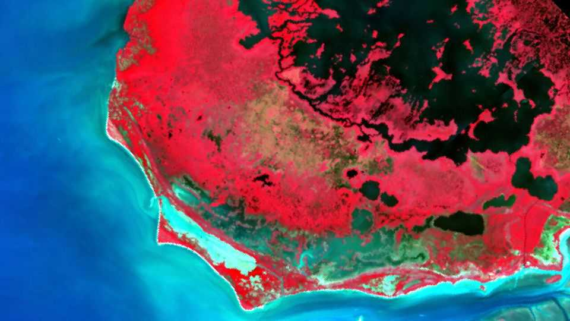

Cameras in space could help spot invasive plants on Earth
The trick lies in how the leaves of different species reflect light

Nov 12th 2026
AS ITS NAME implies, the Earth Surface Mineral Dust Source Investigation (EMIT) exists to analyse terrestrial dust—and to do so from the International Space Station. It does this by recording the wavelengths of light that dust absorbs and reflects, measurements that are important for modelling how Earth’s temperature changes over time. Unexpectedly, though, as a paper in Biological Invasions by Susan Meerdink at the University of Iowa has now shown, EMIT may bring a second environmental benefit: an ability to track invasive plant species.
Such tracking has real value. Invasive plants compete with native crops, infest livestock pastures, clog waterways and destroy native ecosystems. In America alone their spread cost over $190bn between 1960 and 2020. But spotting them is not as easy as might be supposed.
Until recently the best way to find invasive plants was to go into the field and look for them. That changed with the invention of hyperspectral imaging. This does not record colours in the way that ordinary cameras do. Instead, it records how surfaces both absorb and reflect different wavelengths of incoming light. The result is a visual fingerprint that permits surfaces that appear identical in colour to the eye—such as the leaves of different plant species—to be distinguished from afar.
To test whether such fingerprints might be visible from space, Dr Meerdink and her colleagues decided to turn EMIT’s camera onto the Everglades, a network of swamplands in Florida that is rife with alligators and challenging to survey in person. They first took high-resolution photographs from a helicopter of 242 locations to see where Brazilian peppertrees—an invasive species that grows rapidly and can endure brackish conditions—were present. The team then ran a computer analysis of EMIT images of the same locations, looking for the peppertree’s hyperspectral fingerprint.
EMIT, they found, supported the conclusions of their helicopter survey. Satellites less sensitive to the wavelength of incoming light, by contrast, confused native plants with the invasive target. Since EMIT has already snapped pictures of most of Earth’s land-surface at least once, and the catalogue is expanding (and is freely available from NASA), it should now be possible to use it to track invasives more widely, and take appropriate action. ■